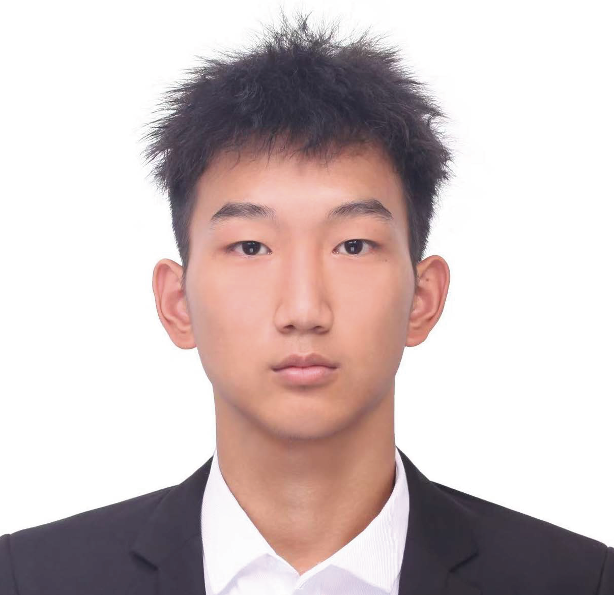
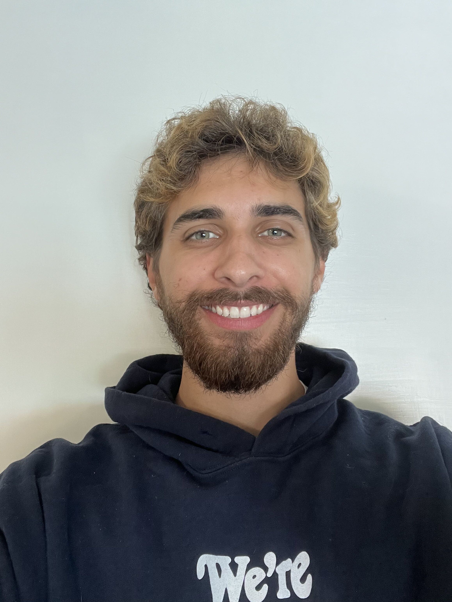
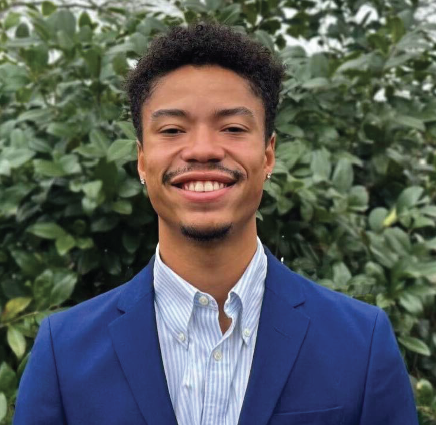
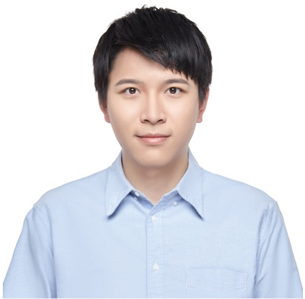
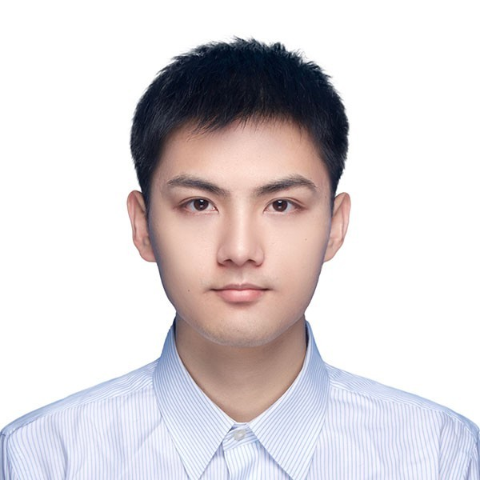

Dong Li, Ph.D.
Dong Li, Ph.D.Assistant Professor, CSEE
Director, Future Sensing and Interaction Lab
Meet the students and research affiliates advancing the Future Sensing and Interaction Lab’s research.
Dong Li, Ph.D.Assistant Professor, CSEE
Director, Future Sensing and Interaction Lab
 Rishav Gupta
Rishav Gupta2025–Present

Likairui Zhang2026–Present

Charley Sanchez2026–Present
 Joe Kim
Joe Kim2026–Present
Cyber Graduate Fellowship
 Kodilinye Mkpasi
Kodilinye MkpasiJunior · 2024–Present
 Marianne Nguyen
Marianne NguyenJunior · 2025–Present
UMBC Cyber Scholar

Christian WilkinsSenior · 2025–Present
COEIT Research Day Undergraduate Award
 Aima Waheed
Aima WaheedSophomore · 2026–Present
COEIT Student Summer Project Awardee
2021–Present
Independent Researcher
Software Engineer, Bose Corporation

Xiaoxuan Liang2023–2026
Ph.D., ECE, UMass Amherst

Renzhi Hao2024–Present
Independent Researcher
Software Engineer, Bloomberg L.P.